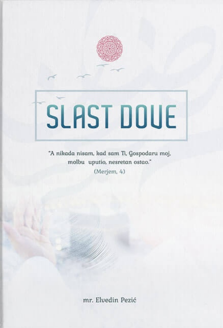
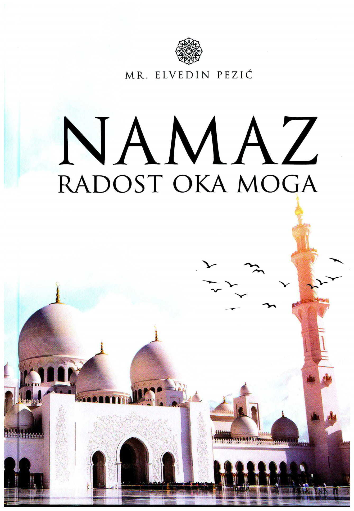
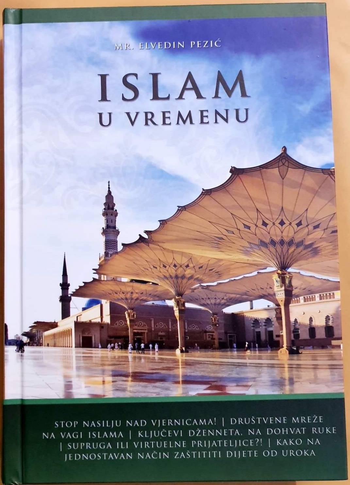
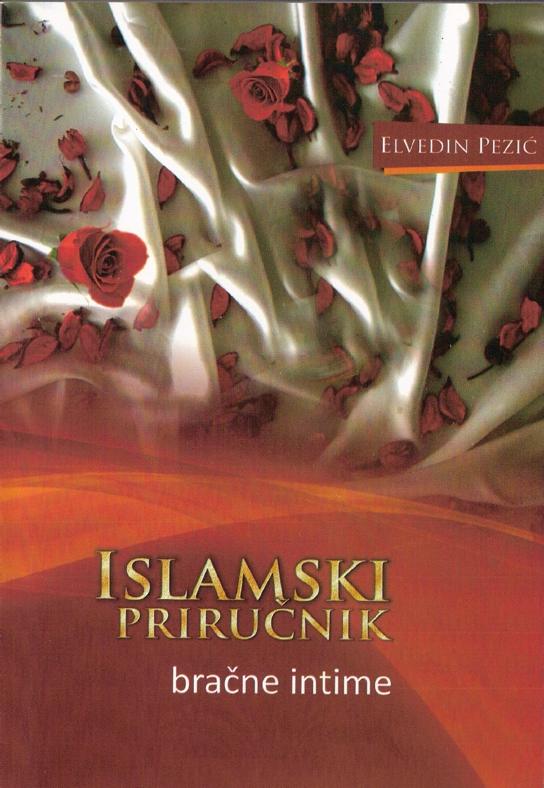
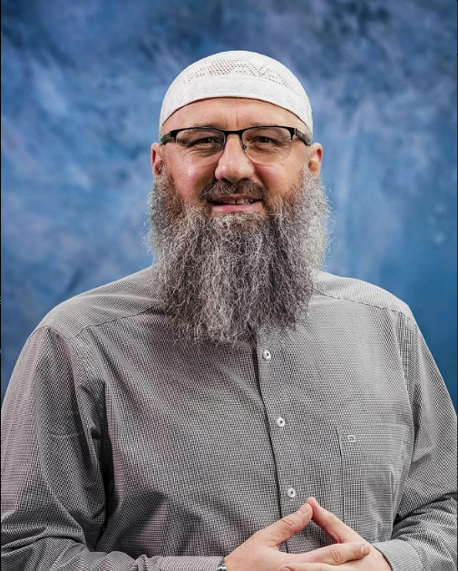
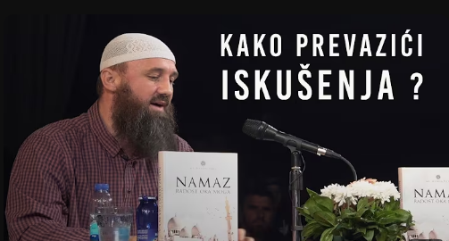
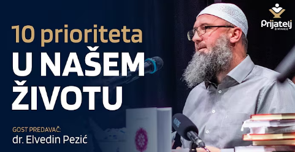
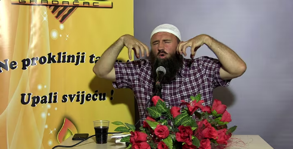

Žao nam je, ovaj website ne podržaje telefone(samo za komjutere i laptope)
Pezić
Knjige
Biografija
Predavanja
Kontakt
Kupi 25,00 BAM

Slast dove
"Slast dove" Elvedina Pezića istražuje značaj dove
u životu muslimana.
Autor objašnjava da dova nije samo traženje pomoći,
već i duboka duhovna povezanost s Allahom.
Kroz primjere
iz Kur'ana i hadisa, Pezić naglašava
da Allah uvijek odgovara na dovu,
iako odgovor možda ne bude onakav kakav očekujemo.
Knjiga poziva čitatelje
da uče dovu iskreno, sa vjerom i
povjerenjem, te da je čine dijelom svog
svakodnevnog života,
tražeći unutrašnju smirenost i povezanost s Allahom.
Kupi 29,00 BAM

Namaz radost oka moga
"Namaz radost oka moga" Elvedina Pezića ističe značaj namaza
u životu muslimana.
Autor objašnjava da namaz nije samo obaveza, već
i prilika za duhovnu povezanost s Allahom.
Kroz ajete iz Kur'ana i hadise, Pezić naglašava
da namaz donosi smirenost srcu,
jača vjeru i vodi ka ispravnom životu.
Knjiga poziva čitatelje da namaz prakticiraju s iskrenošću,
skrušenošću i ljubavlju, te da ga učine središnjim dijelom
svog svakodnevnog života,
pronalazeći u njemu unutrašnji mir i bliskost s Allahom.
Kupi 30,00 BAM

Islam u vremenu
"Islam u vremenu" Elvedina Pezića istražuje ulogu islama u savremenom društvu.
Autor objašnjava kako vjernik može ostati dosljedan islamskim vrijednostima
uprkos izazovima modernog doba.
Kroz ajete iz Kur'ana i hadise, Pezić naglašava
važnost čvrste vjere, moralnih principa i duhovnog balansa.
Knjiga poziva čitatelje da razumiju islam kao
vodič kroz životne situacije,
pružajući im unutrašnju snagu, smirenost i povezanost s Allahom.
Kupi 30,00 BAM

Priručnik bračne intime
Priručnik bračne intime Elvedina Pezića pruža
islamski pogled na bračne odnose i intimnost.
Autor objašnjava važnost razumijevanja,
poštovanja i nježnosti među supružnicima, oslanjajući se na Kur'an i hadise.
Knjiga naglašava da je intimnost sastavni dio sretnog braka i duhovne povezanosti,
te nudi smjernice za izgradnju zdravog odnosa u skladu s islamskim vrijednostima.
Čitatelji će pronaći praktične savjete kako unaprijediti bračni život,
jačajući ljubav, povjerenje i bliskost u skladu s vjerom.

Elvedin Pezić rođen je 1977. godine i završio je osnovno
i srednje obrazovanje u Bosni i Hercegovini. Tokom rata
bio je pripadnik Armije RBiH. Nakon rata odlučio se
posvetiti islamskom obrazovanju. Prvo je proveo godinu
dana na školovanju u Ujedinjenim Arapskim Emiratima,
zatim godinu dana u Jordanu. Nakon toga upisao je
Islamski univerzitet u Medini, gdje je završio institut za
arapski jezik i diplomirao na Fakultetu šerijata (Islamskog prava). Po povratku u Bosnu i Hercegovinu 2005. godine, aktivno
se uključio u islamsko misionarstvo. Njegova predavanja su
prepoznatljiva po jasnom i jednostavnom objašnjavanju
vjerskih propisa, što ga je učinilo jednim od najpoznatijih
i najpraćenijih islamskih predavača u regiji.

Kako prevazići iskušenja?
Pogledaj

10 prioriteta u našem životu
Pogledaj

3 kaburska pitanja
Pogledaj
Pezić
© 2025 Elvedin Pezić All rights reserved | Anes Hasancčić
.png)


.png)
.png)